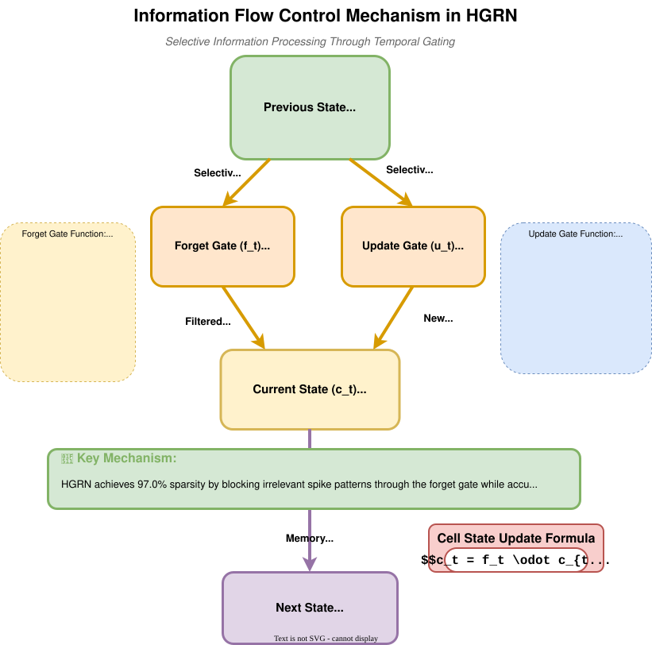

Spiking Memory-augmented spiking neural networks (SNNs) promise energy-efficient neuromorphic computing, yet their generalization across sensory modalities remains unexplored. We present the first comprehensive cross-modal ablation study of memory mechanisms in SNNs, evaluating Hopfield networks, Hierarchical Gated Recurrent Networks (HGRNs), and supervised contrastive learning (SCL) across visual (N-MNIST) and auditory (SHD) neuromorphic datasets. Our systematic evaluation of five architectures reveals striking modality-dependent performance patterns: Hopfield networks achieve 97.68% accuracy on visual tasks but only 76.15% on auditory tasks (21.53 point gap), while SCL demonstrates more balanced cross-modal performance (96.72% visual, 82.16% audio). Joint multi-modal training with HGRN achieves 94.41% visual and 79.37% audio accuracy, matching parallel HGRN performance through unified deployment. Our work provides the first empirical evidence for modality-specific memory optimization in neuromorphic systems, achieving 603× energy efficiency over traditional neural networks.